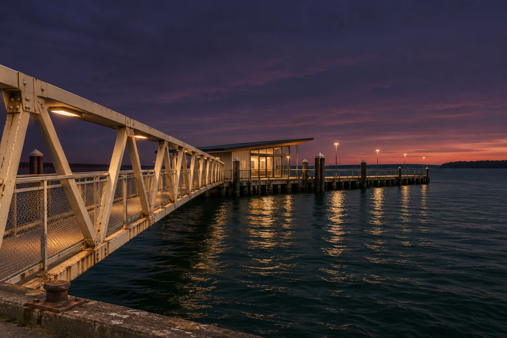

Independent web and mobile design
Make the next step clear.
I design websites and apps for moments when people need to compare, choose, or act.
View selected workSelected work
Night Ferry Mobile app
Mobile app concept
Eight minutes
between piers.
A rider needs to know if there’s time to walk to the next ferry. Put that answer ahead of the timetable.
Open Night Ferry case study23:10 departure16 min · Room to transfer
23:21 departure5 min · Too tight
8 minutes needed to walk between piers.
Counterform / Web product concept
A photo only shows one side.
A salvage catalog that lets architects inspect a material from three angles before reserving it.

- Format
- 200 × 200 mm
- Thickness
- 18–22 mm
- Available
- 28.4 m²
Project inquiries
Where do your
users hesitate?
GitHub inquiries are public. Start with a short introduction and share private project details separately.
A useful starting point
- Who will use it?
- What’s hard to decide today?
- What should happen next?